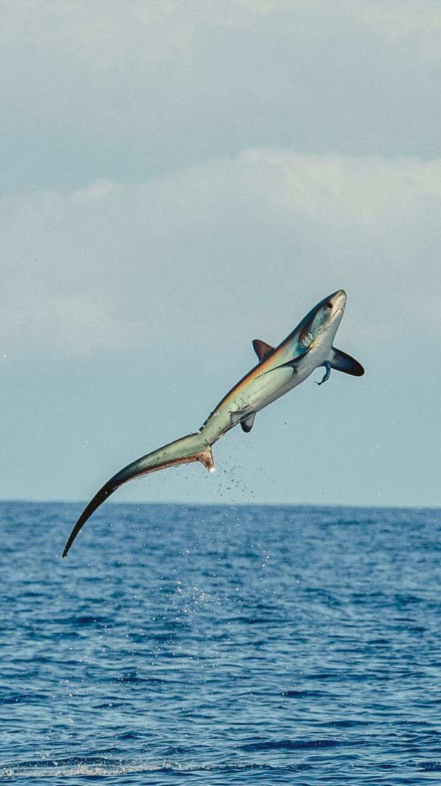

|  |
Thresher sharks are large lamniform sharks of the family Alopiidae found in all temperate and tropical oceans of the world;
the family contains three extant species, all within the genus Alopias.
All three thresher shark species have been listed as vulnerable to extinction by the World Conservation Union since 2007 (IUCN).
All are popular sport fish.[citation needed] In addition, they are hunted for their meat, livers (for shark liver oil), skin (for leather), and fins for use in shark-fin soup.
Although occasionally sighted in shallow, inshore waters, thresher sharks are primarily pelagic; they prefer the open ocean, characteristically preferring water 500 metres (1,600 ft) and less.
Common threshers tend to be more prevalent in coastal waters over continental shelves. Common thresher sharks are found along the continental shelves of North America and Asia of the North Pacific, but are rare in the Central and Western Pacific.
In the warmer waters of the Central and Western Pacific, bigeye and pelagic thresher sharks are more common. A thresher shark was seen on the live video feed from one of the ROVs monitoring BP's Macondo oil well blowout in the Gulf of Mexico.
This is significantly deeper than the 500 m (1,600 ft) previously thought to be their limit. A bigeye has also been found in the western Mediterranean, and so distribution may be wider than previously believed,
or environmental factors may be forcing sharks to search for new territories.
Thresher sharks are solitary creatures that keep to themselves. It is known that thresher populations of the Indian Ocean are separated by depth and space according to sex.
Some species however do occasionally hunt in a group of two or three contrary to their solitary nature. All species are noted for their highly migratory or oceanodromous habits.
When hunting schooling fish, thresher sharks are known to "whip" the water.[11] The elongated tail is used to swat smaller fish, stunning them before feeding.
Sometimes the thresher shark will slice the fish in half before eating.
Thresher sharks are one of the few shark species known to jump fully out of the water, using their elongated tail to propel them out of the water, making turns like dolphins; this behavior is called breaching.
|